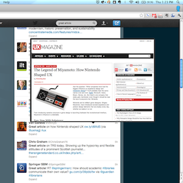
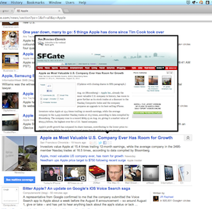
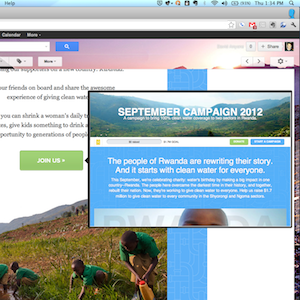

Preview any link on the internet in a customizable tooltip. Great for browsing Twitter and news sites.

SwiftPreview helps you know that a link has awesome content before you click by creating fun and beautiful, content-relevant previews of the pages behind web links across the internet.

Don't create new tabs for every link. Preview it first, and only open the links that are relevant.

SwiftPreview's design gurus ensure previews look beautiful and load quickly.